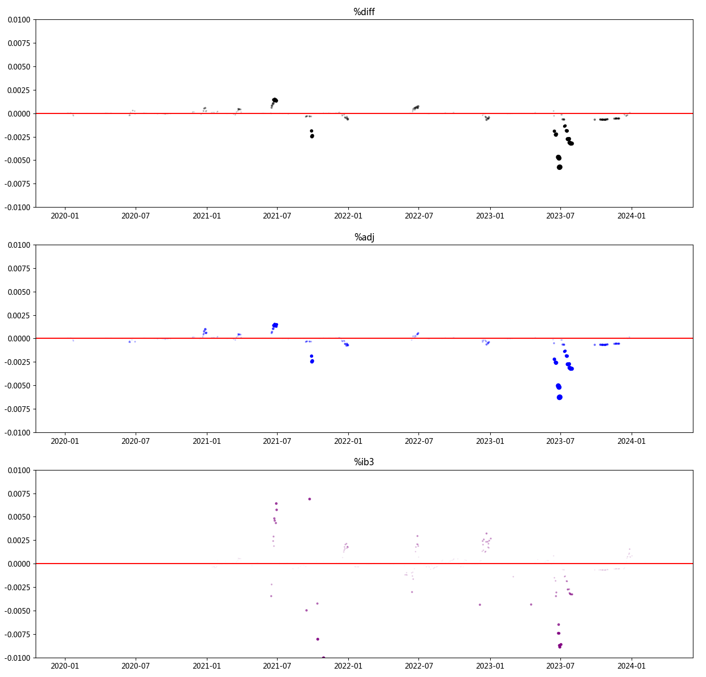
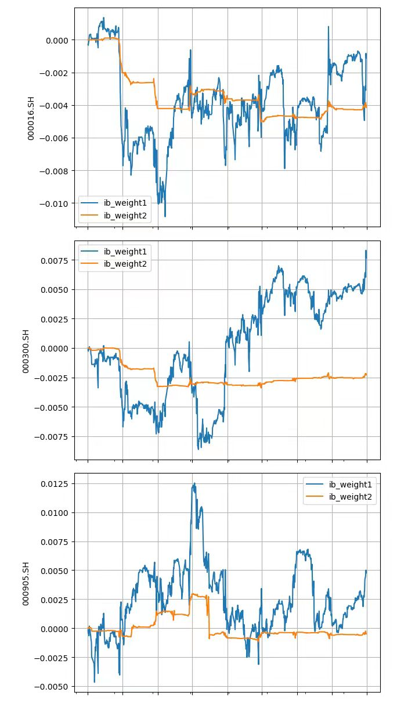

本文最后更新于 2024-04-15，文中内容可能已过时。
中金所推出了多个股指期货合约，这些合约以相应的股票指数为基础标的。为了更好的预测股指期货波动，我们需要更准确的指数信息。而构建指数的基础数据包括：
成份股
成份权重
基准日期的自由流通市值（中证指数）
无论对于历史数据的复原，还是实盘数据的更新，一份合理、准确的指数构建都至关重要。上述三个项目当中，尤其以指数的成份权重尤为关键。
中证指数官网有偿 提供每日权重的更新数据，不过收费巨贵。为此，我们可以通过模拟中证指数的构建方法和计算规则，生成一份准确的指数数据。具体的规则，可以参考《中证指数有限公司股票指数计算与维护细则V13.1》
我们的工作主要有部分：
复原历史指数权重数据
实现每日权重数据更新
根据样本权重，利用逐笔成交数据(last_px)、快照数据(vwap)计算得到每一个点位上的指数价格
中证指数公司负责编制指数，并在每个月月底公布下个月的权重数据（官网可下载）
每年的6、12月第二个周五定期调整权重（此时不再对外公布权重信息，这也是我们自编制的指数在每年6、12月下旬出现较大偏移的原因）
样本临时调整：
退市：直接从样本剔除，然后从备选池纳入新成分
收购合并：中证指数会发布公告，万得指数成分变动数据有记录
停牌（目前无法处理）
除息（现金分红）不予修正：
除权（送股、转股、配股、拆股、缩股）：需要计算除权价格
其他公司事件（由于我们无法获取跟中证指数统计口径一致的数据，暂时无法处理）：
当样本股本发生由其他公司事件（如增发、债转股、期权行权等）引起的总股本变动累计达到或超过5%时，对其进行临时调整，在样本的股本变动生效日前修正指数。
当样本股本发生由其他公司事件引起的总股本变动累计不及5%时，对其进行定期调整，在定期调整生效日前修正指数
样本发生退市情况，需要删除原有样本，然后从备选池录入新样本（万得提供了历史指数成分的纳入、剔除数据）
可以根据恒等式推算
\begin{align}
公司总资产 &: \\
&\equiv N * P_0 - N * D_{现金分红} + NR_{配股比例} R_{配股完成比例}P_{配股价格} \\
&\equiv N (1 + R_{送股比例} + R_{转股比例} + R_{配股比例} * R_{配股完成比例} ) * P_t \\
\longrightarrow P_0^{’} &= \frac{P_0 - D_{现金分红} + R_{配股比例} * R_{配股完成比例} * P_{配股价格} }{ 1 + R_{送股比例} + R_{转股比例} + R_{配股比例} * R_{配股完成比例} }
\end{align}
其中
中证指数使用自由流通市值 ，根据官方文档
为反映市场中实际流通股份的变动情况，指数剔除了样本总股本中的限售股份，以及由于战略持股或其他原因导致的基本不流通股份，剩下的股本称为自由流通股本，也即自由流通量。上市公司公告明确的限售股份和属于下述四类股份，且股东持有股份量达到或超过 5%或具有一致行动人关系的股东合计持有股份量达到或超过 5%，被视为非自由流通股本。四类股份具体如下：
（1）公司创建者、家族、高级管理者等长期持有的股份
（2）国有股份
（3）战略投资者持有的股份
（4）员工持股计划
计算公式为：
$$
自由流通量 = 样本总股本- 非自由流通股本
$$
中证指数有限公司根据多种客观的信息来源估算自由流通量，包括但不限于：
招股说明书、上市公告书：实际控制人，发起人，战略投资者，高管持股，员工持股等；
定期报告：实际控制人，发起人，战略投资者，高管持股，员工持股等；
临时公告：股东持股变化公告、收购报告书、权益变动报告书等。
从以上表述看，自由流通市值 这个概念其实没有一个非常清晰的界定，毕竟以上所涉及的各类公告信息，目前市面上几乎没有数据供应商具备收集与整理的能力。即使强如万得，也是没有这方面精确的、与中证指数官网完全一致的数据。
代码实现难度不高，不过需要注意历史的部分数据有异常情况（如临时退市、纳入与剔除数量不一致等）。
从万得获取一份指数的历史成份记录（wind.indexhistory），用于更新成份列表。由于从每年6、12月第二个周五开始，中证指数没有公布成份权重数据，对于在此时剔除、纳入的样本股票，万得提供的成份权重数据是 NAN，这个一定不能用 （罪恶！）。
在每个月最后一个交易日 从万得获取指数成份权重数据，这个将被用于当作接下来一整个月的数据基础。同时，我们最好在每个月第一个交易日，再更新一份万得的权重数据，然后跟月末的数据进行对比，看看是否有发生变化，以便做数据核对。
接下来的每一天直至月末 ，我们根据基准日期（即上个月月末）的权重数据，计算成份股的涨跌幅度
以上处理，实现了每日根据个股涨跌幅计算市值的波动，并以此更新权重数据。
在每年的6、12月第二个周五，由于没有成份权重数据，我们可以利用万得api提供的流通市值，用来近似代表 中证指数使用的自由流通市值，并逐日进行更新，这样可以尽量减少在6、12月下旬的差异。
1
2
3
4
5
6
7
8
9
10
11
12
13
14
15
16
17
18
19
20
21
22
23
24
25
26
@staticmethod
def gen_csi_index_change_days ():
"""计算中证指数在每年6、12月第二个周五调整对应的交易日期
"""
##
start_date = datetime ( 2000 , 1 , 1 )
end_date = datetime ( 2099 , 1 , 1 )
delta = end_date - start_date
days = []
for i in range ( delta . days + 1 ):
day = start_date + timedelta ( days = i )
days . append ( day . strftime ( "%Y-%m- %d " ))
df = pd . DataFrame ({ 'natural_day' : days })
df [ 'natural_mon' ] = df [ 'natural_day' ] . apply ( lambda x : x [: 7 ])
df [ 'day_of_week' ] = df [ 'natural_day' ] . apply (
lambda x : datetime . strptime ( x , '%Y-%m- %d ' ) . strftime ( " %u " ))
df [ 'nth_of_week' ] = df . groupby ([ 'natural_mon' , "day_of_week" ])[ "day_of_week" ] . transform ( lambda x : range ( 1 , len ( x ) + 1 ))
for k in [ 'day_of_week' , 'nth_of_week' ]:
df [ k ] = df [ k ] . astype ( str )
## 样本调整实施时间原则上分别为每年 6 月和 12 月的第二个星期五的下一交易日。
df = df [( df [ 'natural_mon' ] . str . contains ( '-06$|-12$' )) &
( df [ 'day_of_week' ] == '5' ) &
( df [ 'nth_of_week' ] == '2' )]
return df
1
2
3
4
5
6
7
8
9
10
11
12
13
14
natural_day natural_mon day_of_week nth_of_week
160 2000-06-09 2000-06 5 2
342 2000-12-08 2000-12 5 2
524 2001-06-08 2001-06 5 2
713 2001-12-14 2001-12 5 2
895 2002-06-14 2002-06 5 2
... ... ... ... ...
35412 2096-12-14 2096-12 5 2
35594 2097-06-14 2097-06 5 2
35776 2097-12-13 2097-12 5 2
35958 2098-06-13 2098-06 5 2
36140 2098-12-12 2098-12 5 2
[198 rows x 4 columns]
1
2
3
4
res = windx ( 'wset' , [
"indexhistory" ,
f "startdate= { start_day } ;enddate= { cal . today () } ;windcode= { self . index_symbol } " ],
src = self . wind_src )
1
2
3
4
5
6
7
8
9
10
11
12
tradedate tradecode tradename mv weight tradestatus TradingDay Symbol
0 Mon, 11 Dec 2023 00:00:00 GMT 300308.SZ 中际旭创 964.595725 0.972000 剔除 2023-12-11 300308.SZ
1 Mon, 11 Dec 2023 00:00:00 GMT 688256.SH 寒武纪-U 708.168907 0.497000 剔除 2023-12-11 688256.SH
2 Mon, 11 Dec 2023 00:00:00 GMT 600372.SH 中航机载 629.056562 0.398000 剔除 2023-12-11 600372.SH
3 Mon, 11 Dec 2023 00:00:00 GMT 601136.SH 首创证券 599.966769 0.103000 剔除 2023-12-11 601136.SH
4 Mon, 11 Dec 2023 00:00:00 GMT 300832.SZ 新产业 599.896292 0.352000 剔除 2023-12-11 300832.SZ
... ... ... ... ... ... ... ... ...
2925 Mon, 04 Jan 2010 00:00:00 GMT 601008.SH 连云港 41.879040 NaN 纳入 2010-01-04 601008.SH
2926 Mon, 04 Jan 2010 00:00:00 GMT 002212.SZ 天融信 40.611450 NaN 纳入 2010-01-04 002212.SZ
2927 Mon, 04 Jan 2010 00:00:00 GMT 002107.SZ 沃华医药 40.322682 NaN 纳入 2010-01-04 002107.SZ
2928 Mon, 04 Jan 2010 00:00:00 GMT 002109.SZ 兴化股份 39.459840 NaN 纳入 2010-01-04 002109.SZ
2929 Mon, 04 Jan 2010 00:00:00 GMT 600644.SH 乐山电力 34.280414 NaN 纳入 2010-01-04 600644.SH
1
2
3
4
5
6
7
8
9
10
self.index_symbol = '000905.SH'
self.output_path = '/home/william/Desktop/ib'
self.trading_day = '2023-06-09'
self.wind_src = 'wuya'
self.base_day = '2023-06-08'
self.this_mon = '2023-06'
self.last_mon = '2023-05'
self.this_mon_first_day = '2023-06-01'
self.this_mon_last_day = '2023-06-30'
self.last_mon_last_day = '2023-05-31'
1
2
3
4
5
6
7
8
9
10
11
12
13
14
15
16
17
18
19
20
21
22
23
24
25
26
27
28
29
30
31
32
33
34
35
36
37
38
39
40
41
42
43
44
45
def fetch_index_weight_from_wind ( self ):
"""用这个月第一天的数据来填充剩下的日期
"""
## 1. 如果是月末，使用月末的日期，获取权重
## 2. 如果是非月末，则使用第一天的，这个应该跟月末数据是一致的
wind_trading_day = ( self . this_mon_last_day if self . trading_day == self . this_mon_last_day else self . this_mon_first_day )
csvfile = f " { self . output_path } /wind.fetch_index_weight. { wind_trading_day } . { self . index_symbol } .csv"
if not os . path . isfile ( csvfile ):
try :
# res = wind.fetch_index_weight(self.index_symbol, self.trading_day)
## 万得的 000300.SH 是每个月变动两次，需要修改 base day
## 我们终端中证指数权重不是每日更新的，是月度更新，沪深300就月初和月末这2次变动。
## 如果需要每日的数据，要购买中证指数的服务，成为会员，然后在万得做数据订制才行。
## 是的，目前只有沪深300的权重是月初和月末变动更新的。
res = self . wind . fetch_index_weight ( self . index_symbol , wind_trading_day )
res . to_csv ( csvfile , index = False )
log . inf ( f "wind.fetch_index_weight: { self . index_symbol } , { wind_trading_day } ==> { csvfile } " )
except Exception as e :
msg = traceback . format_exc ()
log . err ( msg )
raise Exception ( msg )
res = pd . read_csv ( csvfile )
res [ 'BenchmarkDay' ] = res [ 'BaseDay' ] . apply ( lambda x : datetime . strptime ( x [: 16 ], " %a , %d %b %Y" ) . strftime ( '%Y-%m- %d ' ))
res [ 'TradingDay' ] = self . trading_day
res [ 'IndexName' ] = ''
res [ 'IndexAlias' ] = ''
res [ 'IndexSymbol' ] = self . index_symbol
res [ 'Symbol' ] = res [ 'w_code' ]
## 标准化
res = res [ ~ pd . isna ( res [ 'index_weight' ])]
res [ 'Weight' ] = res [ 'index_weight' ] / res [ 'index_weight' ] . sum ()
res [ 'WeightAdjust' ] = res [ 'Weight' ]
if ( len ( res [ 'BenchmarkDay' ] . unique ()) != 1 or
( res [ 'BenchmarkDay' ] . unique ()[ 0 ] not in [ self . base_day , wind_trading_day ] and
self . trading_day > '2020-01-01' )
):
raise Exception ( f """
WindApi Error fetch_index_weight
{ self . base_day = }
{ res = }
""" )
df = res [ self . COLUMNS ]
return df
1
2
3
4
5
6
7
8
9
10
11
12
13
14
TradingDay BenchmarkDay IndexName IndexAlias IndexSymbol Symbol Weight WeightAdjust
0 2023-06-09 2023-05-31 000905.SH 000009.SZ 0.003790 0.003790
1 2023-06-09 2023-05-31 000905.SH 000012.SZ 0.001270 0.001270
2 2023-06-09 2023-05-31 000905.SH 000021.SZ 0.003250 0.003250
3 2023-06-09 2023-05-31 000905.SH 000027.SZ 0.002000 0.002000
4 2023-06-09 2023-05-31 000905.SH 000031.SZ 0.000710 0.000710
.. ... ... ... ... ... ... ... ...
495 2023-06-09 2023-05-31 000905.SH 688772.SH 0.000320 0.000320
496 2023-06-09 2023-05-31 000905.SH 688777.SH 0.005100 0.005100
497 2023-06-09 2023-05-31 000905.SH 688779.SH 0.001340 0.001340
498 2023-06-09 2023-05-31 000905.SH 688819.SH 0.000730 0.000730
499 2023-06-09 2023-05-31 000905.SH 689009.SH 0.002120 0.002120
[500 rows x 8 columns]
在每年的6、12月第二个周五（盘后更新），需要使用万得提供的流通市值计算成份股的权重。
具体步骤为：
读取上一个月的权重成份
获取 indexhistory，区分纳入、剔除的成份（最好对比一下数量是否一样）
生成新的成份样本
根据前一天的收盘价计算当天的权重
此后每日更新至月底
1
2
3
4
5
6
7
8
9
10
11
12
13
14
15
16
17
18
19
20
21
22
23
24
25
26
27
28
29
30
31
32
33
34
35
36
37
38
39
40
41
42
43
44
45
46
47
48
49
50
51
52
53
54
55
56
57
58
59
60
61
62
63
64
65
66
67
68
69
## 1. 先读取上一个的成份
last_mon_day = self . ALL_DAYS [ self . ALL_DAYS . mon == self . last_mon ] . days . values [ - 1 ]
csvfile = f " { self . output_path } / { self . index_symbol } .base_day. { last_mon_day } .csv"
if not os . path . isfile ( csvfile ):
if not ( re . search ( "SH" , self . index_symbol ) or self . trading_day > '2019-06-01' ):
df_last_mon = self . fetch_index_weight_from_wind ()
else :
raise Exception ( f "failed to find last mon base_day: { csvfile = } " )
else :
log . inf ( f "already done, using { csvfile = } " )
df_last_mon = pd . read_csv ( csvfile )
## 2. 然后根据出入 history 情况进行剔除、添加
## 注意 TradingDay 是生效日期，需要在 base_day 加上一天
res = self . index_history [
( self . index_history . TradingDay == cal . cal_trading_day ( self . base_day , + 1 ))
]
if len ( res ) == 0 :
base_day = self . SPECIAL_DAYS [ self . SPECIAL_DAYS . mon == self . this_mon ]
for day in base_day . days :
res = self . index_history [
( self . index_history . TradingDay == cal . cal_trading_day ( day , + 1 ))
]
if len ( res ) != 0 :
break
if set ( res . tradestatus . unique ()) != set ([ '剔除' , '纳入' ]) and self . trading_day > '2020-01-01' :
raise Exception ( f """
Wind has Changed it's tradestatus,
should be ...... { set ([ '剔除' , '纳入' ]) = }
but got { set ( res . tradestatus . unique ()) = }
""" )
removed = res [ res . tradestatus . str . contains ( "剔除" )]
added = res [ res . tradestatus . str . contains ( "纳入" )]
## 2017-06-01: 000804.CSI, removed:30, added:29
if abs ( len ( removed ) - len ( added )) > 1 and len ( df_last_mon ) < 1000 :
raise Exception ( f """
Wind has different symbol length
{ len ( removed ) = }
{ len ( added ) = }
""" )
log . wrn ( f """
{ self . index_symbol = }
{ self . trading_day = }
{ self . base_day = }
{ removed = }
{ added = }
""" )
## 剔除
x = df_last_mon [ ~ ( df_last_mon . Symbol . isin ( removed . Symbol ))]
if len ( x ) != ( len ( df_last_mon ) - len ( removed )) and len ( df_last_mon ) < 1000 :
raise Exception ( f """
Wind has different symbol length
{ len ( df_last_mon ) = }
{ len ( removed ) = }
{ len ( x ) = }
{ (( len ( df_last_mon ) - len ( removed ))) = }
""" )
x = x [[ 'TradingDay' , 'Symbol' ]]
y = added [[ 'TradingDay' , 'Symbol' ]]
df = pd . concat ([ x , y ], ignore_index = True )
if abs ( len ( df ) - len ( df_last_mon )) > 1 and len ( df_last_mon ) < 1000 :
raise Exception ( f """
{ self . index_symbol = } has different symbol length
{ self . trading_day = }
{ self . base_day = }
{ len ( df_last_mon ) = }
{ len ( df ) = }
""" )
这里需要注意基准日期是前一天，需要每日滚动更新。
1
2
3
4
5
6
7
8
9
10
11
12
13
14
15
16
17
18
19
20
21
22
23
24
25
26
27
28
29
30
31
32
33
34
35
36
37
38
39
40
41
42
43
44
45
46
47
48
49
50
51
52
53
54
55
56
57
58
59
60
61
62
63
64
65
66
67
68
69
70
71
72
73
74
75
76
77
78
79
80
81
82
83
84
85
86
87
88
89
90
91
92
93
94
95
96
97
98
## 3. 根据 FreeShared 计算市值权重
df_freeshares = pd . DataFrame ()
while True :
csvfile = f " { self . output_path } /wind._fetch_stock_daily_by_symbol_freeshares. { self . base_day } .csv"
if len ( df_freeshares ) == 0 :
if not os . path . isfile ( csvfile ):
symbol_list = list ( set ( df . Symbol . to_list ()))
res = wind . _fetch_stock_daily_by_symbol_freeshares (
trading_day = self . base_day ,
symbol = symbol_list
)
res . to_csv ( csvfile , index = False )
log . inf ( f "already done, using { csvfile = } " )
df_freeshares = pd . read_csv ( csvfile )
# exchange_listing = get_exchange_listing()
# exchange_listing = pd.merge(exchange_listing, df_freeshares, on = 'Symbol', how = 'right', suffixes = ['_exchange', ''])
missing_symbols_list = df [ ~ ( df . Symbol . isin ( df_freeshares . Symbol . values ))] . Symbol . to_list () + \
df_freeshares [( pd . isna ( df_freeshares . FreeShare ))] . Symbol . to_list ()
if len ( set ( missing_symbols_list )) != 0 :
log . wrn ( f "less symbol, do qry WindAPI again" )
continue
else :
break
else :
symbol_list = df [ ~ df . Symbol . isin ( df_freeshares . Symbol . values )] . Symbol . to_list () + \
df_freeshares [ pd . isna ( df_freeshares . FreeShare )] . Symbol . to_list ()
res = wind . _fetch_stock_daily_by_symbol_freeshares (
trading_day = self . base_day ,
symbol = list ( set ( symbol_list )))
res = pd . concat ([ df_freeshares , res ])
res . drop_duplicates ( inplace = True )
res . to_csv ( csvfile , index = False )
df_freeshares = pd . read_csv ( csvfile )
break
df_freeshares = df_freeshares [ df_freeshares . Symbol . isin ( df . Symbol . values )]
df_freeshares . drop_duplicates ([ 'Symbol' ], inplace = True )
df_totalshares = ch_idc . read ( f """
select TradingDay, Symbol, TotalShare, FloatAShare
from stock.daily
where TradingDay = ' { self . base_day } '
and TotalShare > 0
""" )
df_freeshares = pd . merge (
df_freeshares , df_totalshares ,
on = 'Symbol' , how = 'left' ,
suffixes = [ '' , '_total' ])
## 中证指数：分级靠档： http://www.sse.com.cn/market/sseindex/calculation/c/5726306.pdf
## 除非特别说明，中证指数有限公司在计算指数时，采用分级靠档的方法，即根据自由流通量所占样本总股本的比例（即自由流通比例）赋予样本总股本一定的加权比例，
## 以确计算指数的股本保持相对稳定。
## 自由流通比例=自由流通量/A股总股本
## 调整股本数=A股总股本×加权比例
def handle_shares ( symbol , free_shares , total_shares ):
if pd . isna ( free_shares ) or free_shares <= 1 :
log . inf ( f """
{ symbol = }
{ free_shares = }
{ total_shares = }
""" )
return 0
if pd . isna ( total_shares ):
total_shares = free_shares
if pd . isna ( free_shares ) and pd . isna ( total_shares ):
# 2015-01-26: 000166.SZ 申万宏源新上市，需要用下一天的数据
tmp = ch_idc . read ( f """
select * from stock.daily
where TradingDay > ' { self . base_day } '
and Symbol = ' { symbol } '
and TotalShare > 0
order by TradingDay ASC
limit 1
""" )
if len ( tmp ) == 0 :
# TradingDay Exchange Symbol FreeShare TradingDay_total TotalShare FloatAShare
# 324 2019-03-08 szse 000043.SZ NaN NaN NaN NaN
return 0
else :
return tmp . FloatAShare . values [ 0 ]
## '2015-06-15': 万得会修改历史分红数据，导致 shares 不太对
r = min ( free_shares / total_shares * 100 , 100 )
assert r < 100.01 , f "error shares amount: { symbol } "
if r < 15 :
r = int ( r ) + 1
elif r > 80 :
r = 100
else :
r = ( int ( r / 10 ) + 1 ) * 10
return r / 100.0 * total_shares
df_freeshares [ 'FreeShareAdjust' ] = df_freeshares [[ 'Symbol' , 'FreeShare' , 'TotalShare' ]] . apply (
lambda x : handle_shares ( x [ 0 ], x [ 1 ], x [ 2 ]), axis = 1 )
cond = ( pd . isna ( df_freeshares [ 'TotalShare' ]) & pd . isna ( df_freeshares [ 'FreeShare' ]))
df_freeshares . loc [ cond , 'TotalShare' ] = df_freeshares . loc [ cond , 'FreeShareAdjust' ]
df_freeshares . loc [ cond , 'FreeShare' ] = df_freeshares . loc [ cond , 'FreeShareAdjust' ]
if len ( df_freeshares [ df_freeshares [ 'FreeShareAdjust' ] > df_freeshares [ 'TotalShare' ]]) > 0 :
raise Exception ( f """
Error shares for
{ df_freeshares = }
""" )
1
2
3
4
5
6
7
8
9
10
11
12
13
14
15
16
17
18
19
20
21
22
23
24
25
## cal weight
daily_base_day = ch . read ( f """
select TradingDay, Symbol, Close,
TotalShare, FloatAShare
from stock.daily
where TradingDay = ' { self . base_day } '
""" )
df = pd . merge ( daily_base_day , df_freeshares , on = 'Symbol' , how = 'right' ,
suffixes = [ '' , '_wind_freeshares' ])
## 防止 Wind 复权导致的股本异常
df [ 'FreeShare' ] = df [[ 'TotalShare' , 'FreeShare' ]] . apply ( lambda x : min ( x [ 0 ], x [ 1 ]), axis = 1 )
df [ 'FreeValue' ] = df [ 'FreeShare' ] * df [ 'Close' ]
df [ 'FreeValueAdjust' ] = df [ 'FreeShareAdjust' ] * df [ 'Close' ]
df [ 'Weight' ] = df [ 'FreeValue' ] / df [ 'FreeValue' ] . sum ()
df [ 'WeightAdjust' ] = df [ 'FreeValueAdjust' ] / df [ 'FreeValueAdjust' ] . sum ()
if len ( added ) == len ( removed ) == 1 :
for k in [ 'Weight' , 'WeightAdjust' ]:
df . loc [ pd . isna ( df [ k ]), k ] = removed . weight . values [ 0 ] / 100.0
for k in [ 'Weight' , 'WeightAdjust' ]:
df . loc [ df [ k ] <= self . EPSILON , k ] = self . EPSILON
df [ 'BenchmarkDay' ] = self . base_day
df [ 'TradingDay' ] = self . trading_day
df [ 'IndexName' ] = ''
df [ 'IndexAlias' ] = ''
df [ 'IndexSymbol' ] = self . index_symbol
1
2
3
4
5
6
7
8
9
10
11
12
13
14
15
16
17
18
19
20
21
22
23
24
25
26
27
28
29
30
31
32
33
34
35
36
37
38
39
40
41
42
43
44
45
46
47
48
49
50
51
52
def adjust_weight_on_daily ( self , df ):
"""
http://192.168.1.191:20080/wiki/#/team/M9rVLNSS/share/LdejewHw/page/9DNzQcim
判断当天盘后是否有最新的权重更新(比如wind数据源月末最后一天, 或者6月/12月指数调整披露的日期)
* 如果有，则直接同步更新至最新的指数权重。
* 如果没有，则用当天盘后stock.daily中stock_symbols的close/preclose当做权重，来调整前一日的权重。
"""
while True :
special = self . SPECIAL_DAYS . groupby ([ 'mon' ]) . agg ( "first" )
if self . trading_day in special . days . values :
break
if df . BenchmarkDay . values [ 0 ] == self . trading_day :
break
csvfile = f " { self . output_path } / { cal . cal_trading_day ( self . trading_day , - 1 ) } . { self . index_symbol } .ib_weight.csv"
if not os . path . isfile ( csvfile ):
break
log . inf ( f "now try to update ib_weight by pre_close: { self . trading_day } " )
df_pre = pd . read_csv ( csvfile )
daily = get_stock_daily_from_cache ( self . trading_day )
if daily is None or len ( daily ) == 0 :
daily = ch_idc . read ( f """
select * from stock.daily
where TradingDay = ' { self . trading_day } '
""" )
daily = pd . merge ( daily , df_pre , on = 'Symbol' , how = 'right' , suffixes = [ '' , '_ib' ])
if len ( daily ) != len ( df ) and self . trading_day > '2020-01-01' :
raise Exception ( f """
{ len ( daily ) = }
{ len ( df ) = }
""" )
daily [ 'x' ] = daily [ 'Close' ] / daily [ 'PreClose' ]
for k in [ 'Weight' , 'WeightAdjust' ]:
daily [ f ' { k } Origin' ] = daily [ f ' { k } ' ]
daily [ f ' { k } Update' ] = daily [ f ' { k } Origin' ] * ( daily [ 'x' ] / daily [ 'x' ] . sum ())
daily [ f ' { k } Update' ] = daily [ f ' { k } Update' ] / daily [ f ' { k } Update' ] . sum ()
daily = daily [ self . COLUMNS + [ 'WeightOrigin' , 'WeightUpdate' , 'WeightAdjustOrigin' , 'WeightAdjustUpdate' ]]
daily [ 'BenchmarkDay' ] = self . trading_day
## 2015-05-20: 000016.SH
if len ( daily [ pd . isna ( daily [ 'WeightUpdate' ])]) != 0 :
break
## ---------------------------------------
## use update version
for k in [ 'Weight' , 'WeightAdjust' ]:
daily [ f ' { k } ' ] = daily [ f ' { k } Update' ] df = daily [ self . COLUMNS ]
break
## ---------------------------------------
return df
1
2
3
4
5
6
7
8
9
10
11
12
13
14
15
def run ( self ):
df = pd . DataFrame ([], columns = self . COLUMNS )
if self . index_symbol . endswith ( 'SH' ):
info = csi_index_symbol_basic_info ( self . index_symbol )
if self . trading_day < info [ 'data' ] . get ( 'publishDate' ):
log . wrn ( f "not yet published" )
return df
## ====================
df = self . gen_index_weight ()
self . df = self . adjust_weight_on_daily ( df )
if self . check ():
self . save ()
return self . df
## ====================
这个版本在每年6、12月存在较大偏离，其他时间则较好贴近
 一次更新
根据每日涨跌幅滚动更新后，指数更加平滑了
 ib指数更加平滑
另外，我们在对比权重数据的时候，需要区分价格指数 与全收益指数的区别 。可以参考这篇文章: 全收益指数概念详解
价格指数是单纯反应一篮子股票的价格变化情况。每一个价格指数背后都有一个对应的全收益指数（Total Return Index），这类指数除了反映股价波动外，还假定篮子内所有股票的现金分红用于再投资产生收益。
沪深300指数它对应“沪深300全收益指数”。当有样本股除息（分红派息），沪深300指数不予修正，任其自然回落；沪深300全收益指数考虑到分红的部分，在样本股除息日前按照除息参考价予以修正。
比如这些指数以及对应的全收益指数：wind.规模指数_全收益.csv
我们在每日滚动更新权重时，使用的 $\frac{Close}{PreClose}$，这里面的 PreClose 即除权除息价格。
\begin{align}
P_0^{’} &= \frac{P_0 - D_{现金分红} + R_{配股比例} * R_{配股完成比例} *P_{配股价格} }{1 + R_{送股比例} + R_{转股比例} + R_{配股比例} * R_{配股完成比例} }
\end{align}
由于中证指数对于个股现金派息不予以修正，会导致我们滚动计算的除权价格偏小，相反的当日的个股收益变大
于是，我们每日滚动计算的指数数据，实际上比中证指数要偏大一些
对此，我们需要跟踪全收益指数，这能反映现金分红进行再投资带来的增益。
 william
william
{kind=link}
{kind=link}
 支付宝
支付宝
 微信
微信